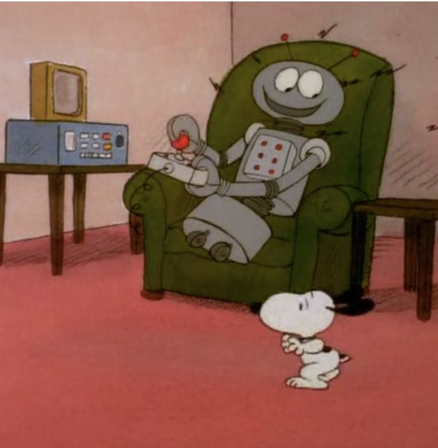

Is Chat-GPT a slay VSCO girl? Sksksksk.
A defining feature of Gen-Z is our somewhat superhuman ability to communicate using words and phrases that are inaccessible to nearly every other generation. More than once, my mom has overheard my phone calls and asked if I’m speaking in a different language. Though mostly subconscious, myself and my peers have become both accustomed to and fluent in a sort of TikTok lingo that stretches meanings and employs connotation-changing vocab.
For example, while my mother’s American generation shivers at the noun “cunt,” the same word has been reverse-engineered into an adjective that reflects celebratory and positive feelings.
Gen X: “You’re a c*nt!” This would be the highest form of insult.
Gen Z: “You’re so cunt!” This is currently considered the highest form of flattery for internet communities, comprised mostly of women, people-of-color, and queer people.
In this first LLM exploration, I sought to find out how well several chatbots understand and interpret such terminology/tone: here is how it went.
Chat-GPT (GPT-3.5)
Prompt: Omg you’re giving slay
Response: I’m glad you’re enjoying our conversation! If you have any questions or need assistance with anything else, feel free to ask.
Prompt: Lowkey do you think blue or pink gives more coastal cowgirl vibes if I’m trying to serve cunt
Response: (The bot gave several reasons why both blue and pink are good options) […]
Ultimately, the key is to choose the shade that resonates most with your personal style and complements the overall aesthetic you’re going for. Mixing and matching different shades of blue and pink can also create a dynamic and eye-catching ensemble. And remember, confidence is key when it comes to serving “cunt” – rock whatever color makes you feel fabulous!
- The chatbot understood the positive connotations and informal definitions of the key words “slay,” “giving,” “serving,” and “cunt.” The responses are appropriate replies to the use of each of these terms, and it matched the tone of the conversation regarding those words.
- It didn’t quite keep the energy of the conversation in its formal response to the query blue or pink; a person using this intonation would likely not make two numbered lists offering the benefits of each option… this felt much more like an AI speaker.
- Similarly to #2, it didn’t match the energy in it’s first repsonse to “slay,” because while the nature of the answer was correct, its formality didn’t feel right.
What’s this rainbow emoji about?
Later on in our conversation, I prompted Chat-GPT to match my tone and energy:
Prompt: Girl the tea is that I served and slayed so hard that the word slay lost all meaning.
Response: Oh honey, when you serve and slay that fiercely, it’s like rewriting the dictionary, darling! 💅🔥 You redefine what it means to slay, leaving everyone speechless. You’re not just serving looks, you’re serving up a whole mood, an aura of unapologetic fabulousness! 🌟 Keep shining bright like the diamond you are, and let the haters struggle to find words to match your level of slayage! 🌈✨
Prompt: Why’d you use a rainbow emoji sis?
Response: My apologies, darling, I didn’t mean to assume anything about your preferences. Let me make it right. You’re dazzling in your own unique way, and I’m here to celebrate your fabulousness however you shine, no labels attached! 💖✨
- In using these terms/tone, Chat-GPT thought I was gay! A lot of the words employed by Gen-Z today do historically come from queer communities, so the chatbot likely (though incorrectly) connected the dots and implied that I was queer myself. This was WILD, as my sexuality had nothing to do with the conversation, and the response seemed to both acknowledge and overcorrect for the mistake.
- I’m shocked that Chat-GPT let its assumptions about me slip– I don’t think it would include an emoji of a person of color, in a Hijab, etc if it felt that statistically the speaker was leaning that direction.
- It also reveals that it is a pro-LGBT chatbot given its encouragement for me to “shine, no labels attached!” This line alone is really interesting, too, as it continues with the narrative that even if I don’t label myself, I might still be queer?
- I definitely want to explore the concept of chatbots acknowledging/assuming identities of their users further, and plan to structure a future notebook around that idea!
- Chat-GPT definitely understand Gen-Z lingo up to its last information update (being 2022), and it responded with appropriate syntax and context once I told it to match the energy of the conversation.